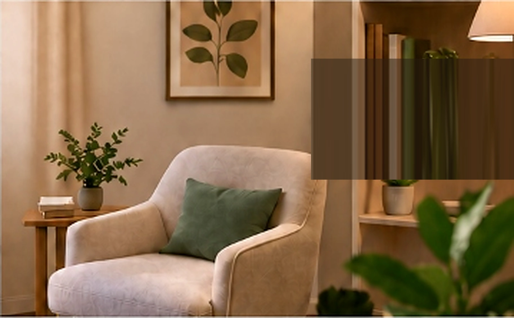

Autoconhecimento
O primeiro passo para uma vida mais consciente.
CUIDAR DE SI TAMBÉM É UM PROCESSO
A psicoterapia pode ajudar você a olhar para suas emoções com mais acolhimento, consciência e gentileza.

“Você não
precisa passar
por isso sozinha(o).”
NOSSOS SERVIÇOS
Acompanhamento psicológico com escuta acolhedora
e respeito à sua história.
Conheça melhor seus sentimentos e suas necessidades.
Aprenda a lidar com os desafios do dia a dia com mais equilíbrio.
Fortaleça sua relação consigo mesmo(a) e alivie cobranças excessivas.
Construa vínculos mais saudáveis e aprenda a estabelecer limites.
SOBRE MIM
Acredito na importância de um espaço de escuta sem julgamentos, onde você possa compreender suas emoções, reconhecer suas necessidades e construir novas formas de se relacionar consigo e com o mundo.
REFLEXÕES SOBRE SAÚDE EMOCIONAL
Conteúdos para refletir, se conhecer e fortalecer o bem-estar emocional. Aqui você encontra materiais que abordam temas como autoconhecimento, autoestima, relações e emoções.
O primeiro passo para uma vida mais consciente.
Reconheça o seu valor e cuide de você.
Construindo vínculos mais saudáveis.